무료 고딕 폰트 150종
메인 화면에서 이 목록 보기 →내 문장으로 미리보기·비교·필터를 함께 쓸 수 있습니다
본문·화면·제목에 두루 쓰는 고딕(산세리프) 계열 상업용 무료 한글 폰트입니다. 굵기 종류와 한글 글자 수, 라이선스 사용 범위를 함께 확인하세요. 화면·UI 본문에는 굵기가 5종 이상인 고딕이 다루기 편합니다.
라이선스 원문 대조 · 다운로드는 원 배포처로 연결 · 목록 갱신 2026-10-21 · 견본 이미지를 누르면 상세 정보와 내 문장 미리보기로 갑니다.
 본고딕고딕 · 굵기 6종 · 한글 11,172자OFL · 인쇄·웹·영상·BI/CI 가능
본고딕고딕 · 굵기 6종 · 한글 11,172자OFL · 인쇄·웹·영상·BI/CI 가능 프리텐다드고딕 · 굵기 9종 · 한글 11,172자OFL · 인쇄·웹·영상·BI/CI 가능
프리텐다드고딕 · 굵기 9종 · 한글 11,172자OFL · 인쇄·웹·영상·BI/CI 가능 나눔고딕고딕 · 굵기 3종 · 한글 11,172자OFL · 인쇄·웹·영상·BI/CI 가능
나눔고딕고딕 · 굵기 3종 · 한글 11,172자OFL · 인쇄·웹·영상·BI/CI 가능 고운돋움고딕 · 굵기 1종 · 한글 11,172자OFL · 인쇄·웹·영상·BI/CI 가능
고운돋움고딕 · 굵기 1종 · 한글 11,172자OFL · 인쇄·웹·영상·BI/CI 가능 G마켓 산스고딕 · 굵기 3종 · 한글 11,172자OFL · 인쇄·웹·영상·BI/CI 가능
G마켓 산스고딕 · 굵기 3종 · 한글 11,172자OFL · 인쇄·웹·영상·BI/CI 가능 고딕 A1고딕 · 굵기 9종 · 한글 11,172자OFL · 인쇄·웹·영상·BI/CI 가능
고딕 A1고딕 · 굵기 9종 · 한글 11,172자OFL · 인쇄·웹·영상·BI/CI 가능 IBM Plex Sans KR고딕 · 굵기 7종 · 한글 11,172자OFL · 인쇄·웹·영상·BI/CI 가능
IBM Plex Sans KR고딕 · 굵기 7종 · 한글 11,172자OFL · 인쇄·웹·영상·BI/CI 가능 아스타 산스고딕 · 굵기 6종 · 한글 11,172자OFL · 인쇄·웹·영상·BI/CI 가능
아스타 산스고딕 · 굵기 6종 · 한글 11,172자OFL · 인쇄·웹·영상·BI/CI 가능 페이퍼로지고딕 · 굵기 9종 · 한글 2,780자OFL · 인쇄·웹·영상·BI/CI 가능
페이퍼로지고딕 · 굵기 9종 · 한글 2,780자OFL · 인쇄·웹·영상·BI/CI 가능 프리젠테이션고딕 · 굵기 9종 · 한글 2,780자OFL · 인쇄·웹·영상·BI/CI 가능
프리젠테이션고딕 · 굵기 9종 · 한글 2,780자OFL · 인쇄·웹·영상·BI/CI 가능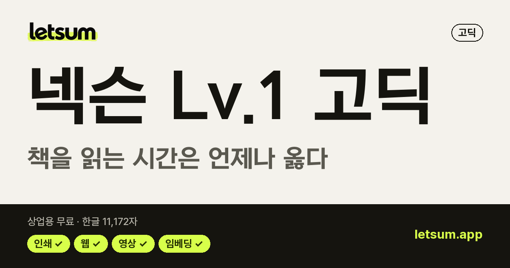
넥슨 Lv.1 고딕고딕 · 굵기 3종 · 한글 11,172자넥슨 무료 이용 · 인쇄·웹·영상 가능 수트고딕 · 굵기 9종 · 한글 2,668자(공식 웹폰트 기준)OFL · 인쇄·웹·영상·BI/CI 가능
수트고딕 · 굵기 9종 · 한글 2,668자(공식 웹폰트 기준)OFL · 인쇄·웹·영상·BI/CI 가능 나눔고딕코딩고딕 · 굵기 2종 · 한글 11,172자OFL · 인쇄·웹·영상·BI/CI 가능
나눔고딕코딩고딕 · 굵기 2종 · 한글 11,172자OFL · 인쇄·웹·영상·BI/CI 가능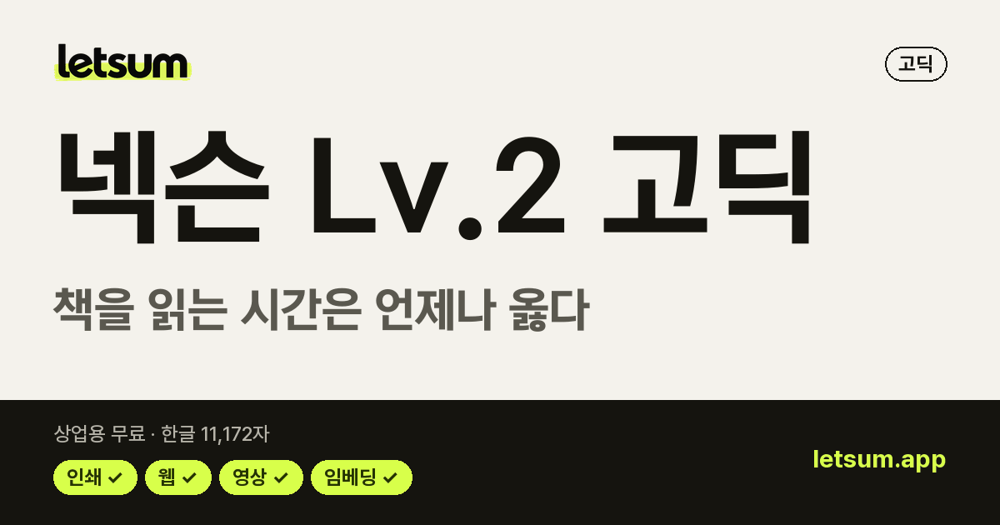
넥슨 Lv.2 고딕고딕 · 굵기 4종 · 한글 11,172자넥슨 무료 이용 · 인쇄·웹·영상 가능 원티드 산스고딕 · 굵기 6종 · 한글 11,172자OFL · 인쇄·웹·영상·BI/CI 가능
원티드 산스고딕 · 굵기 6종 · 한글 11,172자OFL · 인쇄·웹·영상·BI/CI 가능 카페24 써라운드고딕 · 굵기 2종 · 한글 11,172자OFL · 인쇄·웹·영상·BI/CI 가능
카페24 써라운드고딕 · 굵기 2종 · 한글 11,172자OFL · 인쇄·웹·영상·BI/CI 가능 카페24 아네모네고딕 · 굵기 2종 · 한글 11,172자OFL · 인쇄·웹·영상·BI/CI 가능
카페24 아네모네고딕 · 굵기 2종 · 한글 11,172자OFL · 인쇄·웹·영상·BI/CI 가능 D2Coding고딕 · 굵기 2종 · 한글 11,172자OFL · 인쇄·웹·영상·BI/CI 가능
D2Coding고딕 · 굵기 2종 · 한글 11,172자OFL · 인쇄·웹·영상·BI/CI 가능 LINE Seed KR고딕 · 굵기 3종 · 한글 11,172자OFL · 인쇄·웹·영상·BI/CI 가능
LINE Seed KR고딕 · 굵기 3종 · 한글 11,172자OFL · 인쇄·웹·영상·BI/CI 가능 해바라기고딕 · 굵기 3종 · 한글 11,172자OFL · 인쇄·웹·영상·BI/CI 가능
해바라기고딕 · 굵기 3종 · 한글 11,172자OFL · 인쇄·웹·영상·BI/CI 가능 나눔스퀘어 네오고딕 · 굵기 5종 · 한글 11,172자OFL · 인쇄·웹·영상·BI/CI 가능
나눔스퀘어 네오고딕 · 굵기 5종 · 한글 11,172자OFL · 인쇄·웹·영상·BI/CI 가능 스위트고딕 · 굵기 7종 · 한글 2,668자(공식 웹폰트 기준)OFL · 인쇄·웹·영상·BI/CI 가능
스위트고딕 · 굵기 7종 · 한글 2,668자(공식 웹폰트 기준)OFL · 인쇄·웹·영상·BI/CI 가능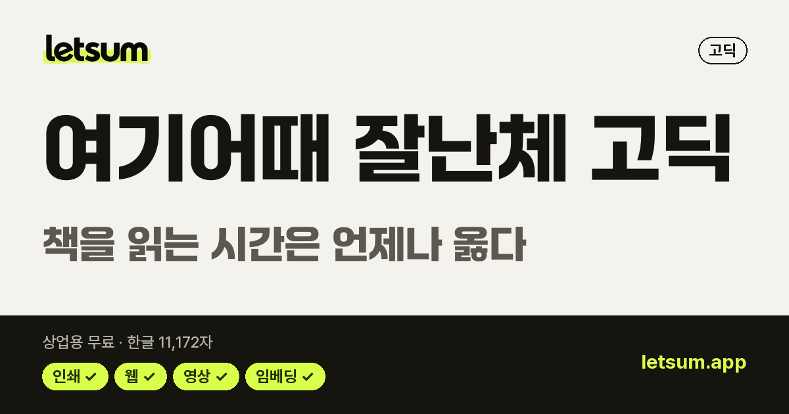
여기어때 잘난체 고딕고딕 · 굵기 1종 · 한글 11,172자여기어때 무료 이용 · 인쇄·웹·영상 가능 Kopub World 돋움체고딕 · 굵기 3종 · 한글 11,172자공공누리 1유형 · 인쇄·웹·영상·BI/CI 가능
Kopub World 돋움체고딕 · 굵기 3종 · 한글 11,172자공공누리 1유형 · 인쇄·웹·영상·BI/CI 가능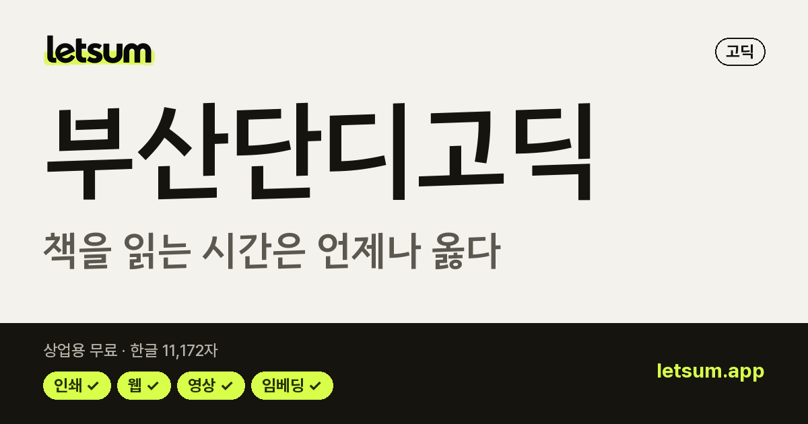
부산단디고딕고딕 · 굵기 3종 · 한글 11,172자부산시 무료 이용 · 인쇄·웹·영상 가능 빗썸고딕 Basic고딕 · 굵기 1종 · 한글 2,350자OFL · 인쇄·웹·영상·BI/CI 가능
빗썸고딕 Basic고딕 · 굵기 1종 · 한글 2,350자OFL · 인쇄·웹·영상·BI/CI 가능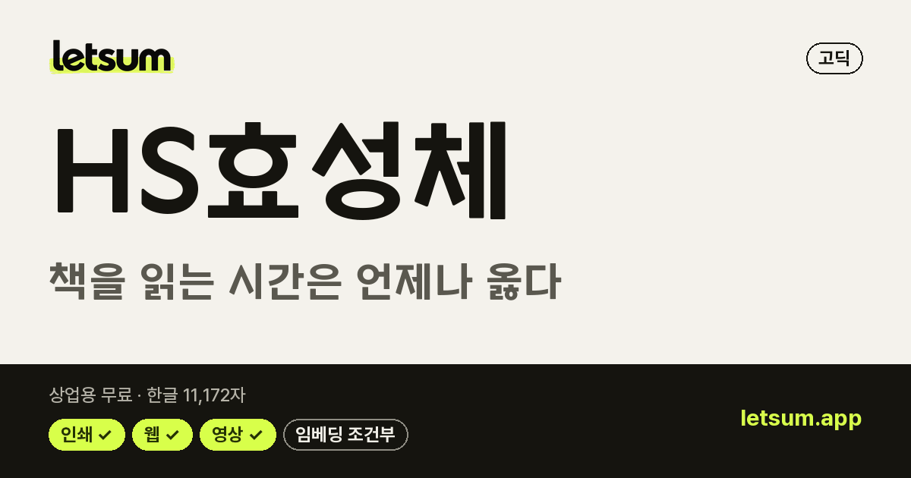
HS효성체고딕 · 굵기 3종 · 한글 11,172자HS효성 무료 이용 · 인쇄·웹·영상 가능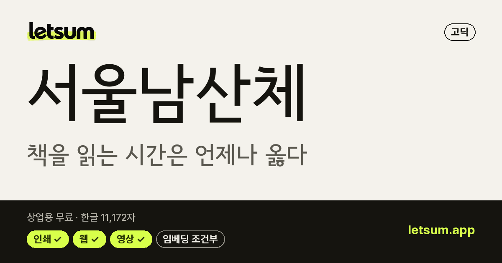
서울남산체고딕 · 굵기 1종 · 한글 11,172자서울시 무료 이용 · 인쇄·웹·영상 가능 Mapo한아름고딕 · 굵기 1종 · 한글 2,790자공공누리 1유형 · 인쇄·웹·영상·BI/CI 가능서울한강체고딕 · 굵기 1종 · 한글 11,172자서울시 무료 이용 · 인쇄·웹·영상 가능
Mapo한아름고딕 · 굵기 1종 · 한글 2,790자공공누리 1유형 · 인쇄·웹·영상·BI/CI 가능서울한강체고딕 · 굵기 1종 · 한글 11,172자서울시 무료 이용 · 인쇄·웹·영상 가능 나눔휴먼고딕 · 굵기 6종 · 한글 2,479자OFL · 인쇄·웹·영상·BI/CI 가능
나눔휴먼고딕 · 굵기 6종 · 한글 2,479자OFL · 인쇄·웹·영상·BI/CI 가능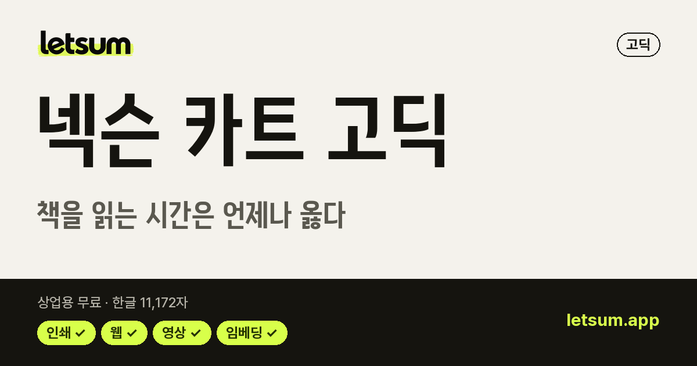
넥슨 카트 고딕고딕 · 굵기 3종 · 한글 11,172자넥슨 무료 이용 · 인쇄·웹·영상 가능 카페24 심플해고딕 · 굵기 1종 · 한글 11,172자OFL · 인쇄·웹·영상·BI/CI 가능
카페24 심플해고딕 · 굵기 1종 · 한글 11,172자OFL · 인쇄·웹·영상·BI/CI 가능 카페24 PRO Slim고딕 · 굵기 3종 · 한글 2,780자OFL · 인쇄·웹·영상·BI/CI 가능
카페24 PRO Slim고딕 · 굵기 3종 · 한글 2,780자OFL · 인쇄·웹·영상·BI/CI 가능 해남체고딕 · 굵기 1종 · 한글 11,088자공공누리 1유형 · 인쇄·웹·영상·BI/CI 가능
해남체고딕 · 굵기 1종 · 한글 11,088자공공누리 1유형 · 인쇄·웹·영상·BI/CI 가능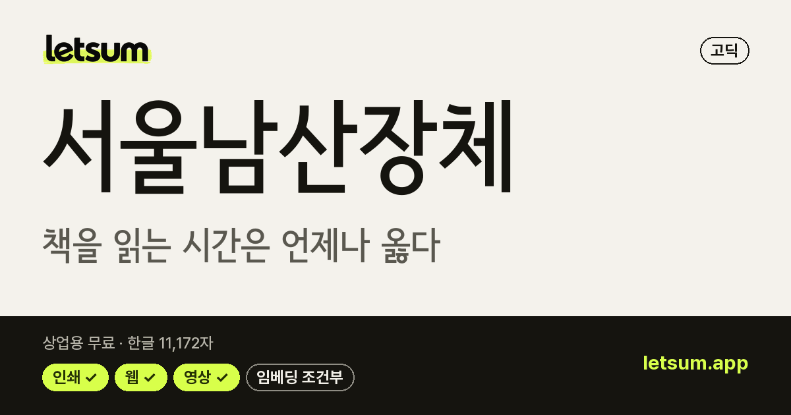
서울남산장체고딕 · 굵기 1종 · 한글 11,172자서울시 무료 이용 · 인쇄·웹·영상 가능 완도청정바다체고딕 · 굵기 1종 · 한글 11,172자공공누리 1유형 · 인쇄·웹·영상·BI/CI 가능
완도청정바다체고딕 · 굵기 1종 · 한글 11,172자공공누리 1유형 · 인쇄·웹·영상·BI/CI 가능 코트라 고딕체고딕 · 굵기 1종 · 한글 2,574자공공누리 1유형 · 인쇄·웹·영상·BI/CI 가능
코트라 고딕체고딕 · 굵기 1종 · 한글 2,574자공공누리 1유형 · 인쇄·웹·영상·BI/CI 가능 문화재돌봄체고딕 · 굵기 1종 · 한글 2,350자공공누리 1유형 · 인쇄·웹·영상·BI/CI 가능
문화재돌봄체고딕 · 굵기 1종 · 한글 2,350자공공누리 1유형 · 인쇄·웹·영상·BI/CI 가능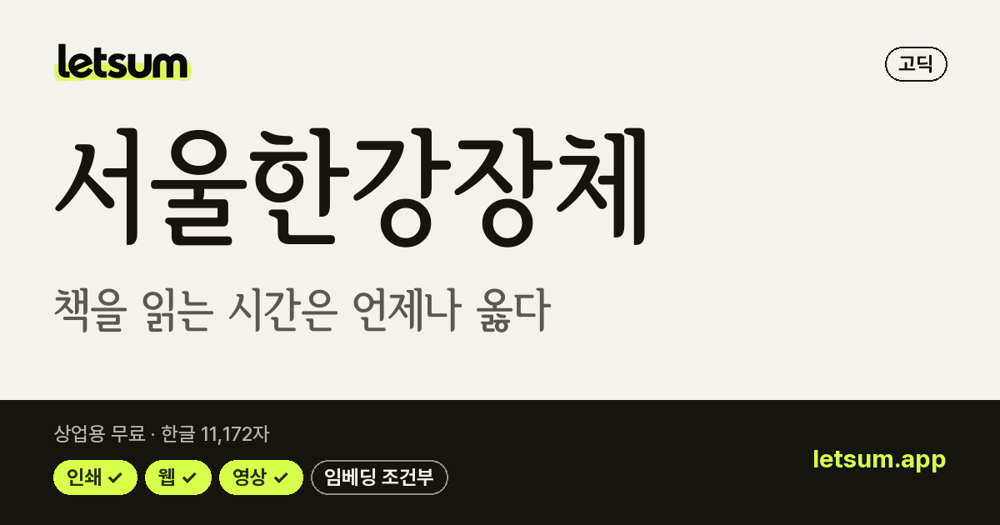
서울한강장체고딕 · 굵기 1종 · 한글 11,172자서울시 무료 이용 · 인쇄·웹·영상 가능 중나좋체고딕 · 굵기 1종 · 한글 2,686자OFL · 인쇄·웹·영상·BI/CI 가능
중나좋체고딕 · 굵기 1종 · 한글 2,686자OFL · 인쇄·웹·영상·BI/CI 가능 코트라 도약체고딕 · 굵기 1종 · 한글 2,350자공공누리 1유형 · 인쇄·웹·영상·BI/CI 가능
코트라 도약체고딕 · 굵기 1종 · 한글 2,350자공공누리 1유형 · 인쇄·웹·영상·BI/CI 가능 나눔고딕 에코고딕 · 굵기 3종 · 한글 11,172자OFL · 인쇄·웹·영상·BI/CI 가능
나눔고딕 에코고딕 · 굵기 3종 · 한글 11,172자OFL · 인쇄·웹·영상·BI/CI 가능 나눔바른고딕고딕 · 굵기 3종 · 한글 11,172자OFL · 인쇄·웹·영상·BI/CI 가능
나눔바른고딕고딕 · 굵기 3종 · 한글 11,172자OFL · 인쇄·웹·영상·BI/CI 가능 나눔스퀘어고딕 · 굵기 4종 · 한글 2,350자(공식 웹폰트 기준 · 설치용 원본은 배포처 확인)OFL · 인쇄·웹·영상·BI/CI 가능
나눔스퀘어고딕 · 굵기 4종 · 한글 2,350자(공식 웹폰트 기준 · 설치용 원본은 배포처 확인)OFL · 인쇄·웹·영상·BI/CI 가능 나눔스퀘어 라운드고딕 · 굵기 4종 · 한글 2,479자(공식 웹폰트 기준 · 설치용 원본은 배포처 확인)OFL · 인쇄·웹·영상·BI/CI 가능
나눔스퀘어 라운드고딕 · 굵기 4종 · 한글 2,479자(공식 웹폰트 기준 · 설치용 원본은 배포처 확인)OFL · 인쇄·웹·영상·BI/CI 가능 배민 한나체 Air고딕 · 굵기 1종 · 한글 2,375자OFL · 인쇄·웹·영상·BI/CI 가능
배민 한나체 Air고딕 · 굵기 1종 · 한글 2,375자OFL · 인쇄·웹·영상·BI/CI 가능 스포카 한 산스 네오고딕 · 굵기 5종 · 한글 2,574자(공식 웹폰트 기준 · 설치용 원본은 배포처 확인)OFL · 인쇄·웹·영상·BI/CI 가능
스포카 한 산스 네오고딕 · 굵기 5종 · 한글 2,574자(공식 웹폰트 기준 · 설치용 원본은 배포처 확인)OFL · 인쇄·웹·영상·BI/CI 가능 유앤피플고딕 · 굵기 1종 · 한글 11,172자OFL · 인쇄·웹·영상·BI/CI 가능
유앤피플고딕 · 굵기 1종 · 한글 11,172자OFL · 인쇄·웹·영상·BI/CI 가능 달서힐링체고딕 · 굵기 2종 · 한글 2,780자공공누리 1유형 · 인쇄·웹·영상·BI/CI 가능
달서힐링체고딕 · 굵기 2종 · 한글 2,780자공공누리 1유형 · 인쇄·웹·영상·BI/CI 가능 상주해례본체고딕 · 굵기 1종 · 한글 2,350자공공누리 1유형 · 인쇄·웹·영상·BI/CI 가능
상주해례본체고딕 · 굵기 1종 · 한글 2,350자공공누리 1유형 · 인쇄·웹·영상·BI/CI 가능 광양감동체고딕 · 굵기 1종 · 한글 2,780자공공누리 1유형 · 인쇄·웹·영상·BI/CI 가능
광양감동체고딕 · 굵기 1종 · 한글 2,780자공공누리 1유형 · 인쇄·웹·영상·BI/CI 가능 충북대70주년체고딕 · 굵기 1종 · 한글 2,350자공공누리 1유형 · 인쇄·웹·영상·BI/CI 가능
충북대70주년체고딕 · 굵기 1종 · 한글 2,350자공공누리 1유형 · 인쇄·웹·영상·BI/CI 가능 충북대직지체고딕 · 굵기 1종 · 한글 2,393자공공누리 1유형 · 인쇄·웹·영상·BI/CI 가능
충북대직지체고딕 · 굵기 1종 · 한글 2,393자공공누리 1유형 · 인쇄·웹·영상·BI/CI 가능 횡성한우체고딕 · 굵기 1종 · 한글 2,780자공공누리 1유형 · 인쇄·웹·영상·BI/CI 가능
횡성한우체고딕 · 굵기 1종 · 한글 2,780자공공누리 1유형 · 인쇄·웹·영상·BI/CI 가능 소요단풍체고딕 · 굵기 2종 · 한글 2,350자공공누리 1유형 · 인쇄·웹·영상·BI/CI 가능
소요단풍체고딕 · 굵기 2종 · 한글 2,350자공공누리 1유형 · 인쇄·웹·영상·BI/CI 가능 수성돋움체고딕 · 굵기 1종 · 한글 2,781자공공누리 1유형 · 인쇄·웹·영상·BI/CI 가능
수성돋움체고딕 · 굵기 1종 · 한글 2,781자공공누리 1유형 · 인쇄·웹·영상·BI/CI 가능 태백은하수체고딕 · 굵기 1종 · 한글 2,350자공공누리 1유형 · 인쇄·웹·영상·BI/CI 가능
태백은하수체고딕 · 굵기 1종 · 한글 2,350자공공누리 1유형 · 인쇄·웹·영상·BI/CI 가능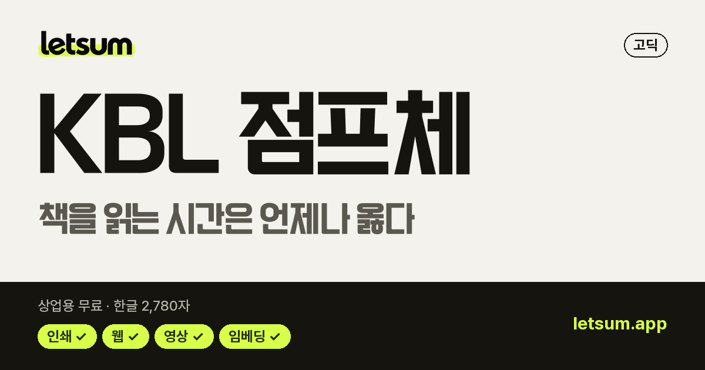
KBL 점프체고딕 · 굵기 3종 · 한글 2,780자KBL 무료 이용 · 인쇄·웹·영상 가능 광양햇살체고딕 · 굵기 2종 · 한글 2,780자공공누리 1유형 · 인쇄·웹·영상·BI/CI 가능
광양햇살체고딕 · 굵기 2종 · 한글 2,780자공공누리 1유형 · 인쇄·웹·영상·BI/CI 가능 전기안전체고딕 · 굵기 1종 · 한글 2,350자공공누리 1유형 · 인쇄·웹·영상·BI/CI 가능
전기안전체고딕 · 굵기 1종 · 한글 2,350자공공누리 1유형 · 인쇄·웹·영상·BI/CI 가능 KoddiUD 온고딕고딕 · 굵기 3종 · 한글 11,172자공공누리 1유형 · 인쇄·웹·영상·BI/CI 가능강원교육모두체강원교육모두체고딕 · 굵기 2종 · 한글 11,172자강원교육청 무료 이용 · 인쇄·웹·영상·BI/CI 가능
KoddiUD 온고딕고딕 · 굵기 3종 · 한글 11,172자공공누리 1유형 · 인쇄·웹·영상·BI/CI 가능강원교육모두체강원교육모두체고딕 · 굵기 2종 · 한글 11,172자강원교육청 무료 이용 · 인쇄·웹·영상·BI/CI 가능 강원교육튼튼체고딕 · 굵기 1종 · 한글 11,172자강원교육청 무료 이용 · 인쇄·웹·영상·BI/CI 가능
강원교육튼튼체고딕 · 굵기 1종 · 한글 11,172자강원교육청 무료 이용 · 인쇄·웹·영상·BI/CI 가능 경기천년제목고딕 · 굵기 3종 · 한글 11,172자공공누리 1유형 · 인쇄·웹·영상·BI/CI 가능
경기천년제목고딕 · 굵기 3종 · 한글 11,172자공공누리 1유형 · 인쇄·웹·영상·BI/CI 가능 고신고딕고딕 · 굵기 4종 · 한글 11,172자OFL · 인쇄·웹·영상·BI/CI 가능
고신고딕고딕 · 굵기 4종 · 한글 11,172자OFL · 인쇄·웹·영상·BI/CI 가능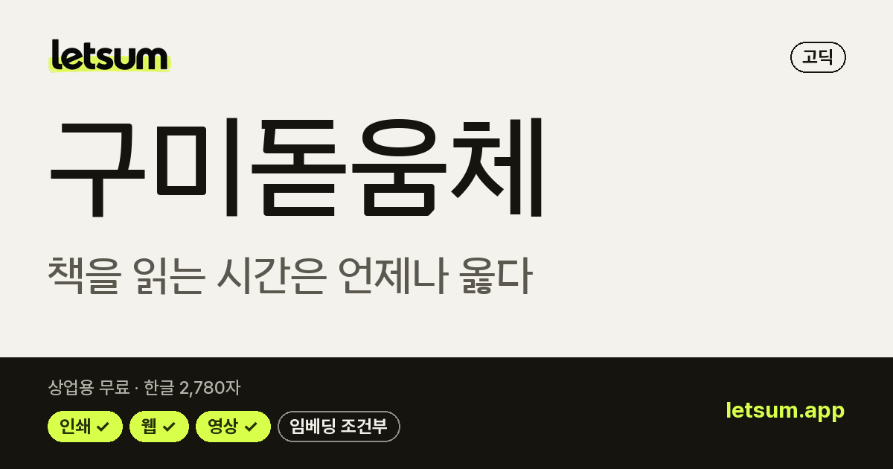
구미돋움체고딕 · 굵기 1종 · 한글 2,780자구미시 무료 이용 · 인쇄·웹·영상 가능 김포평화고딕체고딕 · 굵기 2종 · 한글 2,856자공공누리 1유형 · 인쇄·웹·영상·BI/CI 가능
김포평화고딕체고딕 · 굵기 2종 · 한글 2,856자공공누리 1유형 · 인쇄·웹·영상·BI/CI 가능 김포평화제목고딕 · 굵기 1종 · 한글 2,666자공공누리 1유형 · 인쇄·웹·영상·BI/CI 가능
김포평화제목고딕 · 굵기 1종 · 한글 2,666자공공누리 1유형 · 인쇄·웹·영상·BI/CI 가능 도서관체고딕 · 굵기 1종 · 한글 2,351자공공누리 1유형 · 인쇄·웹·영상·BI/CI 가능
도서관체고딕 · 굵기 1종 · 한글 2,351자공공누리 1유형 · 인쇄·웹·영상·BI/CI 가능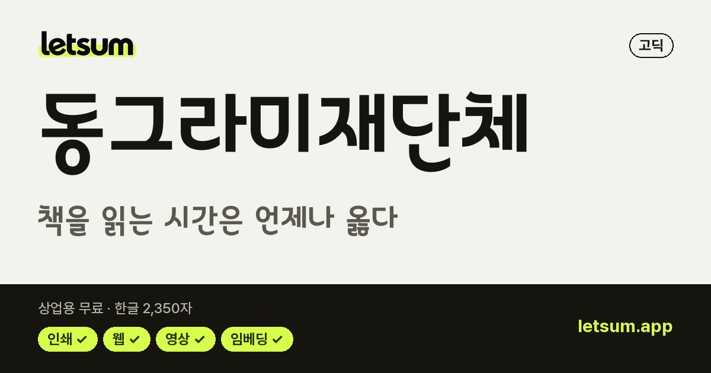
동그라미재단체고딕 · 굵기 3종 · 한글 2,350자동그라미 무료 이용 · 인쇄·웹·영상 가능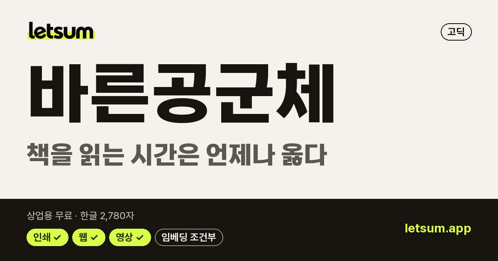
바른공군체고딕 · 굵기 2종 · 한글 2,780자공군 무료 이용 · 인쇄·웹·영상 가능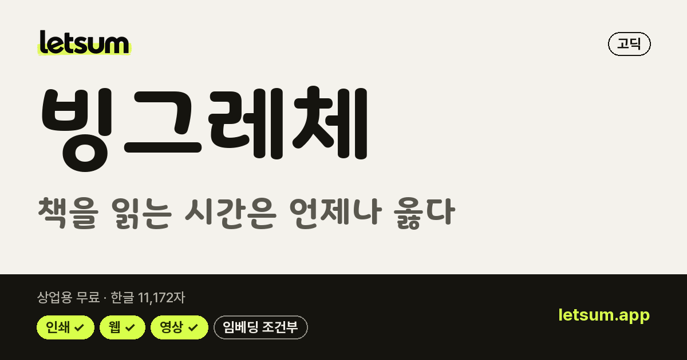
빙그레체고딕 · 굵기 2종 · 한글 11,172자빙그레 무료 이용 · 인쇄·웹·영상 가능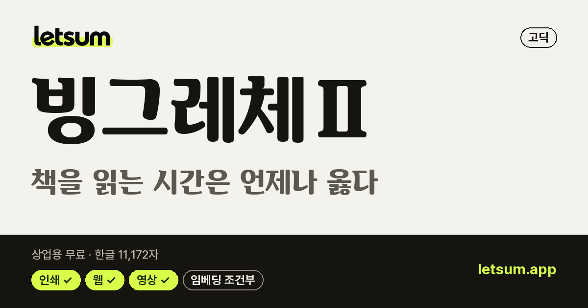
빙그레체Ⅱ고딕 · 굵기 2종 · 한글 11,172자빙그레 무료 이용 · 인쇄·웹·영상 가능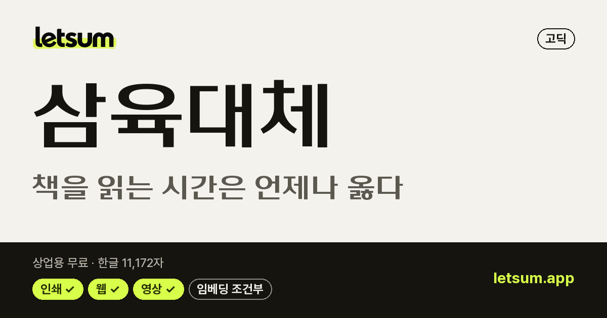
삼육대체고딕 · 굵기 2종 · 한글 11,172자삼육대 무료 이용 · 인쇄·웹·영상 가능 샌드박스 어그로체고딕 · 굵기 3종 · 한글 2,481자어그로체 무료 이용 · 인쇄·웹·영상·BI/CI 가능
샌드박스 어그로체고딕 · 굵기 3종 · 한글 2,481자어그로체 무료 이용 · 인쇄·웹·영상·BI/CI 가능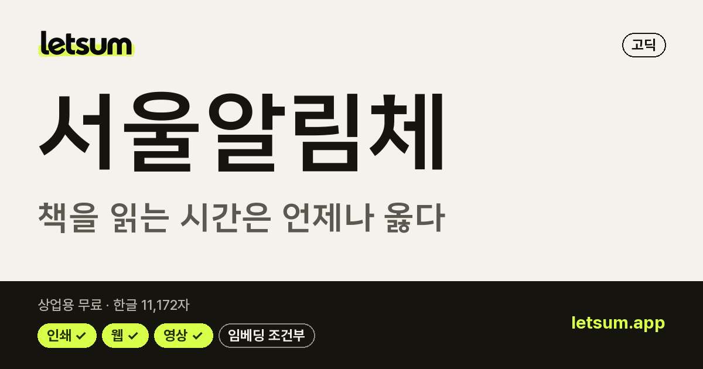
서울알림체고딕 · 굵기 4종 · 한글 11,172자서울시 무료 이용 · 인쇄·웹·영상 가능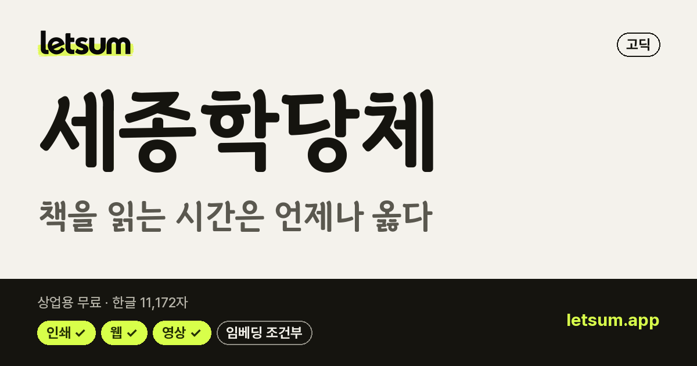
세종학당체고딕 · 굵기 2종 · 한글 11,172자세종학당재단 무료 이용 · 인쇄·웹·영상 가능 속초바다 돋움고딕 · 굵기 1종 · 한글 2,780자공공누리 1유형 · 인쇄·웹·영상·BI/CI 가능
속초바다 돋움고딕 · 굵기 1종 · 한글 2,780자공공누리 1유형 · 인쇄·웹·영상·BI/CI 가능 에스코어 드림고딕 · 굵기 9종 · 한글 2,350자에스코어 무료 이용 · 인쇄·웹·영상·BI/CI 가능
에스코어 드림고딕 · 굵기 9종 · 한글 2,350자에스코어 무료 이용 · 인쇄·웹·영상·BI/CI 가능 에이투지체고딕 · 굵기 9종 · 한글 2,780자OFL · 인쇄·웹·영상·BI/CI 가능
에이투지체고딕 · 굵기 9종 · 한글 2,780자OFL · 인쇄·웹·영상·BI/CI 가능 엘리스 디지털배움체고딕 · 굵기 2종 · 한글 11,172자OFL · 인쇄·웹·영상·BI/CI 가능
엘리스 디지털배움체고딕 · 굵기 2종 · 한글 11,172자OFL · 인쇄·웹·영상·BI/CI 가능 엘리스 디지털코딩체고딕 · 굵기 2종 · 한글 2,350자OFL · 인쇄·웹·영상·BI/CI 가능
엘리스 디지털코딩체고딕 · 굵기 2종 · 한글 2,350자OFL · 인쇄·웹·영상·BI/CI 가능 엘리스 DX널리체고딕 · 굵기 3종 · 한글 11,172자OFL · 인쇄·웹·영상·BI/CI 가능
엘리스 DX널리체고딕 · 굵기 3종 · 한글 11,172자OFL · 인쇄·웹·영상·BI/CI 가능 여주도자체고딕 · 굵기 1종 · 한글 2,780자공공누리 1유형 · 인쇄·웹·영상·BI/CI 가능
여주도자체고딕 · 굵기 1종 · 한글 2,780자공공누리 1유형 · 인쇄·웹·영상·BI/CI 가능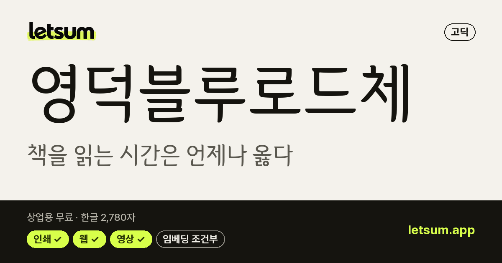
영덕블루로드체고딕 · 굵기 1종 · 한글 2,780자영덕군 무료 이용 · 인쇄·웹·영상 가능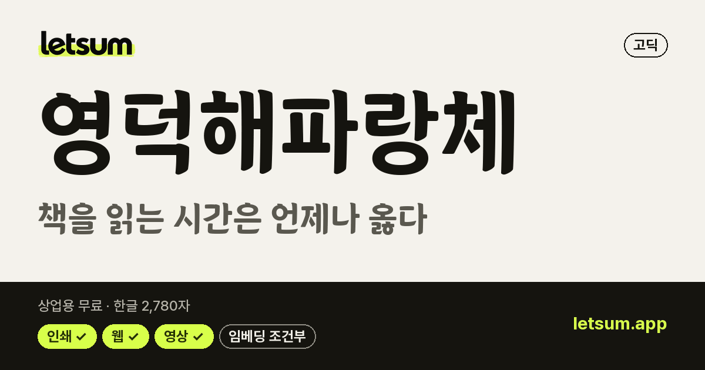
영덕해파랑체고딕 · 굵기 1종 · 한글 2,780자영덕군 무료 이용 · 인쇄·웹·영상 가능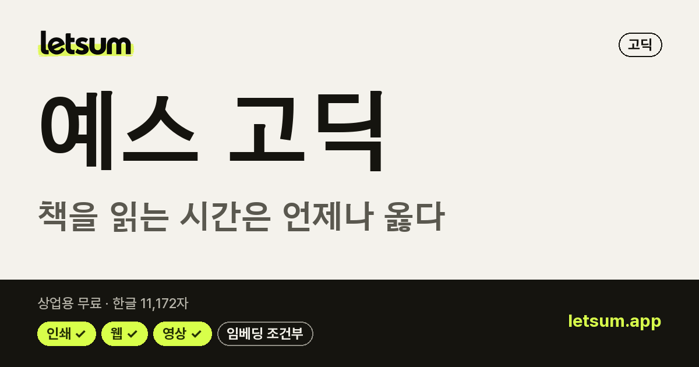
예스 고딕고딕 · 굵기 4종 · 한글 11,172자예스24 무료 이용 · 인쇄·웹·영상 가능 완주누리체고딕 · 굵기 1종 · 한글 2,352자공공누리 1유형 · 인쇄·웹·영상·BI/CI 가능
완주누리체고딕 · 굵기 1종 · 한글 2,352자공공누리 1유형 · 인쇄·웹·영상·BI/CI 가능 은평사가독서체고딕 · 굵기 1종 · 한글 2,781자공공누리 1유형 · 인쇄·웹·영상·BI/CI 가능
은평사가독서체고딕 · 굵기 1종 · 한글 2,781자공공누리 1유형 · 인쇄·웹·영상·BI/CI 가능 자연산스고딕 · 굵기 2종 · 한글 11,172자OFL · 인쇄·웹·영상·BI/CI 가능
자연산스고딕 · 굵기 2종 · 한글 11,172자OFL · 인쇄·웹·영상·BI/CI 가능 전남교육바른체고딕 · 굵기 2종 · 한글 2,780자전남교육 무료 이용 · 인쇄·웹·영상·BI/CI 가능
전남교육바른체고딕 · 굵기 2종 · 한글 2,780자전남교육 무료 이용 · 인쇄·웹·영상·BI/CI 가능 조선가는고딕고딕 · 굵기 1종 · 한글 2,935자조선일보 무료 이용 · 인쇄·웹·영상·BI/CI 가능
조선가는고딕고딕 · 굵기 1종 · 한글 2,935자조선일보 무료 이용 · 인쇄·웹·영상·BI/CI 가능 조선견고딕고딕 · 굵기 1종 · 한글 2,934자조선일보 무료 이용 · 인쇄·웹·영상·BI/CI 가능
조선견고딕고딕 · 굵기 1종 · 한글 2,934자조선일보 무료 이용 · 인쇄·웹·영상·BI/CI 가능 조선굴림체고딕 · 굵기 1종 · 한글 2,934자조선일보 무료 이용 · 인쇄·웹·영상·BI/CI 가능
조선굴림체고딕 · 굵기 1종 · 한글 2,934자조선일보 무료 이용 · 인쇄·웹·영상·BI/CI 가능 조선굵은고딕고딕 · 굵기 1종 · 한글 2,934자조선일보 무료 이용 · 인쇄·웹·영상·BI/CI 가능
조선굵은고딕고딕 · 굵기 1종 · 한글 2,934자조선일보 무료 이용 · 인쇄·웹·영상·BI/CI 가능 카스퀘어 코드고딕 · 굵기 5종 · 한글 11,172자OFL · 인쇄·웹·영상·BI/CI 가능
카스퀘어 코드고딕 · 굵기 5종 · 한글 11,172자OFL · 인쇄·웹·영상·BI/CI 가능 카카오 작은글씨고딕 · 굵기 3종 · 한글 11,172자OFL · 인쇄·웹·영상·BI/CI 가능
카카오 작은글씨고딕 · 굵기 3종 · 한글 11,172자OFL · 인쇄·웹·영상·BI/CI 가능 카카오 큰글씨고딕 · 굵기 3종 · 한글 11,172자OFL · 인쇄·웹·영상·BI/CI 가능
카카오 큰글씨고딕 · 굵기 3종 · 한글 11,172자OFL · 인쇄·웹·영상·BI/CI 가능 케리스 배움체고딕 · 굵기 4종 · 한글 2,780자OFL · 인쇄·웹·영상·BI/CI 가능
케리스 배움체고딕 · 굵기 4종 · 한글 2,780자OFL · 인쇄·웹·영상·BI/CI 가능 펴진고딕고딕 · 굵기 3종 · 한글 11,172자OFL · 인쇄·웹·영상·BI/CI 가능
펴진고딕고딕 · 굵기 3종 · 한글 11,172자OFL · 인쇄·웹·영상·BI/CI 가능 하다 라운드고딕 · 굵기 5종 · 한글 11,172자OFL · 인쇄·웹·영상·BI/CI 가능
하다 라운드고딕 · 굵기 5종 · 한글 11,172자OFL · 인쇄·웹·영상·BI/CI 가능 하다 모노고딕 · 굵기 2종 · 한글 11,172자OFL · 인쇄·웹·영상·BI/CI 가능
하다 모노고딕 · 굵기 2종 · 한글 11,172자OFL · 인쇄·웹·영상·BI/CI 가능 하다 산스고딕 · 굵기 9종 · 한글 11,172자OFL · 인쇄·웹·영상·BI/CI 가능
하다 산스고딕 · 굵기 9종 · 한글 11,172자OFL · 인쇄·웹·영상·BI/CI 가능 하다 콘덴스드고딕 · 굵기 5종 · 한글 11,172자OFL · 인쇄·웹·영상·BI/CI 가능
하다 콘덴스드고딕 · 굵기 5종 · 한글 11,172자OFL · 인쇄·웹·영상·BI/CI 가능 하이원 원추리체고딕 · 굵기 2종 · 한글 2,508자공공누리 1유형 · 인쇄·웹·영상·BI/CI 가능
하이원 원추리체고딕 · 굵기 2종 · 한글 2,508자공공누리 1유형 · 인쇄·웹·영상·BI/CI 가능 학교안심 곧은제목고딕 · 굵기 2종 · 한글 2,350자OFL · 인쇄·웹·영상·BI/CI 가능
학교안심 곧은제목고딕 · 굵기 2종 · 한글 2,350자OFL · 인쇄·웹·영상·BI/CI 가능 학교안심 그림일기고딕 · 굵기 1종 · 한글 11,172자OFL · 인쇄·웹·영상·BI/CI 가능
학교안심 그림일기고딕 · 굵기 1종 · 한글 11,172자OFL · 인쇄·웹·영상·BI/CI 가능 학교안심 둥근미소고딕 · 굵기 2종 · 한글 2,808자OFL · 인쇄·웹·영상·BI/CI 가능
학교안심 둥근미소고딕 · 굵기 2종 · 한글 2,808자OFL · 인쇄·웹·영상·BI/CI 가능 학교안심 맑은날고딕 · 굵기 2종 · 한글 2,350자OFL · 인쇄·웹·영상·BI/CI 가능
학교안심 맑은날고딕 · 굵기 2종 · 한글 2,350자OFL · 인쇄·웹·영상·BI/CI 가능 학교안심 바른돋움고딕 · 굵기 2종 · 한글 2,350자OFL · 인쇄·웹·영상·BI/CI 가능
학교안심 바른돋움고딕 · 굵기 2종 · 한글 2,350자OFL · 인쇄·웹·영상·BI/CI 가능 학교안심 반달고딕 · 굵기 1종 · 한글 2,780자OFL · 인쇄·웹·영상·BI/CI 가능
학교안심 반달고딕 · 굵기 1종 · 한글 2,780자OFL · 인쇄·웹·영상·BI/CI 가능 학교안심 받아쓰기고딕 · 굵기 2종 · 한글 11,172자OFL · 인쇄·웹·영상·BI/CI 가능
학교안심 받아쓰기고딕 · 굵기 2종 · 한글 11,172자OFL · 인쇄·웹·영상·BI/CI 가능 학교안심 산뜻돋움고딕 · 굵기 2종 · 한글 2,350자OFL · 인쇄·웹·영상·BI/CI 가능
학교안심 산뜻돋움고딕 · 굵기 2종 · 한글 2,350자OFL · 인쇄·웹·영상·BI/CI 가능 학교안심 알림장고딕 · 굵기 2종 · 한글 11,172자OFL · 인쇄·웹·영상·BI/CI 가능
학교안심 알림장고딕 · 굵기 2종 · 한글 11,172자OFL · 인쇄·웹·영상·BI/CI 가능 학교안심 우주고딕 · 굵기 1종 · 한글 2,350자OFL · 인쇄·웹·영상·BI/CI 가능
학교안심 우주고딕 · 굵기 1종 · 한글 2,350자OFL · 인쇄·웹·영상·BI/CI 가능 학교안심 이어달리기고딕 · 굵기 1종 · 한글 2,780자OFL · 인쇄·웹·영상·BI/CI 가능
학교안심 이어달리기고딕 · 굵기 1종 · 한글 2,780자OFL · 인쇄·웹·영상·BI/CI 가능 학교안심 자연고딕 · 굵기 1종 · 한글 2,780자OFL · 인쇄·웹·영상·BI/CI 가능
학교안심 자연고딕 · 굵기 1종 · 한글 2,780자OFL · 인쇄·웹·영상·BI/CI 가능 학교안심 출석부고딕 · 굵기 2종 · 한글 2,808자OFL · 인쇄·웹·영상·BI/CI 가능
학교안심 출석부고딕 · 굵기 2종 · 한글 2,808자OFL · 인쇄·웹·영상·BI/CI 가능 한겨레결체고딕 · 굵기 3종 · 한글 11,172자한겨레 무료 이용 · 인쇄·웹·영상·BI/CI 가능
한겨레결체고딕 · 굵기 3종 · 한글 11,172자한겨레 무료 이용 · 인쇄·웹·영상·BI/CI 가능 한글누리체고딕 · 굵기 2종 · 한글 2,484자공공누리 3유형 · 인쇄·웹·영상·BI/CI 가능
한글누리체고딕 · 굵기 2종 · 한글 2,484자공공누리 3유형 · 인쇄·웹·영상·BI/CI 가능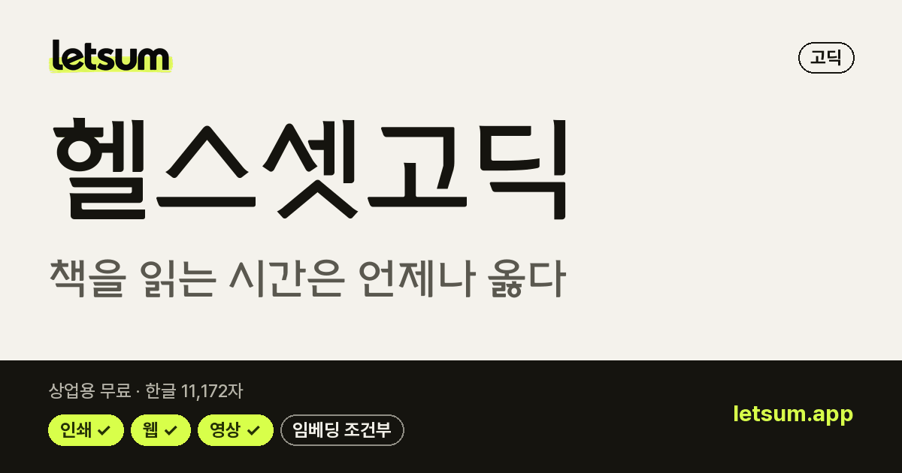
헬스셋고딕고딕 · 굵기 2종 · 한글 11,172자헬스셋 무료 이용 · 인쇄·웹·영상 가능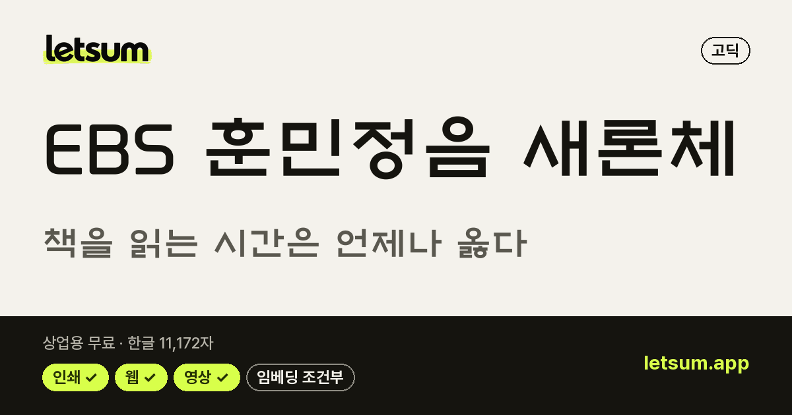
EBS 훈민정음 새론체고딕 · 굵기 3종 · 한글 11,172자EBS 무료 이용 · 인쇄·웹·영상 가능 Interop고딕 · 굵기 8종 · 한글 11,172자OFL · 인쇄·웹·영상·BI/CI 가능
Interop고딕 · 굵기 8종 · 한글 11,172자OFL · 인쇄·웹·영상·BI/CI 가능 Min Sans고딕 · 굵기 9종 · 한글 11,172자OFL · 인쇄·웹·영상·BI/CI 가능
Min Sans고딕 · 굵기 9종 · 한글 11,172자OFL · 인쇄·웹·영상·BI/CI 가능 감탄로드 돋움체고딕 · 굵기 3종 · 한글 2,350자공공누리 1유형 · 인쇄·웹·영상·BI/CI 가능
감탄로드 돋움체고딕 · 굵기 3종 · 한글 2,350자공공누리 1유형 · 인쇄·웹·영상·BI/CI 가능 경복궁 수문장 본문체고딕 · 굵기 3종 · 한글 11,172자공공누리 1유형 · 인쇄·웹·영상·BI/CI 가능
경복궁 수문장 본문체고딕 · 굵기 3종 · 한글 11,172자공공누리 1유형 · 인쇄·웹·영상·BI/CI 가능 고양덕양체고딕 · 굵기 2종 · 한글 2,350자공공누리 1유형 · 인쇄·웹·영상·BI/CI 가능
고양덕양체고딕 · 굵기 2종 · 한글 2,350자공공누리 1유형 · 인쇄·웹·영상·BI/CI 가능 고양일산체고딕 · 굵기 2종 · 한글 2,350자공공누리 1유형 · 인쇄·웹·영상·BI/CI 가능
고양일산체고딕 · 굵기 2종 · 한글 2,350자공공누리 1유형 · 인쇄·웹·영상·BI/CI 가능 김정철_고딕체고딕 · 굵기 3종 · 한글 11,172자OFL · 인쇄·웹·영상·BI/CI 가능
김정철_고딕체고딕 · 굵기 3종 · 한글 11,172자OFL · 인쇄·웹·영상·BI/CI 가능 나눔바른고딕 옛한글고딕 · 굵기 1종 · 한글 11,172자OFL · 인쇄·웹·영상·BI/CI 가능
나눔바른고딕 옛한글고딕 · 굵기 1종 · 한글 11,172자OFL · 인쇄·웹·영상·BI/CI 가능 부산체고딕 · 굵기 1종 · 한글 11,172자공공누리 1유형 · 인쇄·웹·영상·BI/CI 가능
부산체고딕 · 굵기 1종 · 한글 11,172자공공누리 1유형 · 인쇄·웹·영상·BI/CI 가능 빛고을광주체고딕 · 굵기 3종 · 한글 11,172자공공누리 1유형 · 인쇄·웹·영상·BI/CI 가능
빛고을광주체고딕 · 굵기 3종 · 한글 11,172자공공누리 1유형 · 인쇄·웹·영상·BI/CI 가능 아산 이순신 돋움체고딕 · 굵기 3종 · 한글 2,350자공공누리 1유형 · 인쇄·웹·영상·BI/CI 가능
아산 이순신 돋움체고딕 · 굵기 3종 · 한글 2,350자공공누리 1유형 · 인쇄·웹·영상·BI/CI 가능 안동월영교체고딕 · 굵기 1종 · 한글 2,350자공공누리 1유형 · 인쇄·웹·영상·BI/CI 가능
안동월영교체고딕 · 굵기 1종 · 한글 2,350자공공누리 1유형 · 인쇄·웹·영상·BI/CI 가능 정선 동강체고딕 · 굵기 2종 · 한글 11,172자공공누리 1유형 · 인쇄·웹·영상·BI/CI 가능
정선 동강체고딕 · 굵기 2종 · 한글 11,172자공공누리 1유형 · 인쇄·웹·영상·BI/CI 가능 제주고딕체고딕 · 굵기 1종 · 한글 11,172자공공누리 1유형 · 인쇄·웹·영상·BI/CI 가능
제주고딕체고딕 · 굵기 1종 · 한글 11,172자공공누리 1유형 · 인쇄·웹·영상·BI/CI 가능 평창체고딕 · 굵기 2종 · 한글 11,172자공공누리 3유형 · 인쇄·웹·영상·BI/CI 가능
평창체고딕 · 굵기 2종 · 한글 11,172자공공누리 3유형 · 인쇄·웹·영상·BI/CI 가능 포천 오성과한음체고딕 · 굵기 2종 · 한글 2,479자공공누리 1유형 · 인쇄·웹·영상·BI/CI 가능
포천 오성과한음체고딕 · 굵기 2종 · 한글 2,479자공공누리 1유형 · 인쇄·웹·영상·BI/CI 가능 푸른전남체고딕 · 굵기 2종 · 한글 11,172자공공누리 1유형 · 인쇄·웹·영상·BI/CI 가능
푸른전남체고딕 · 굵기 2종 · 한글 11,172자공공누리 1유형 · 인쇄·웹·영상·BI/CI 가능 하남다움체 본문체고딕 · 굵기 1종 · 한글 11,172자공공누리 1유형 · 인쇄·웹·영상·BI/CI 가능
하남다움체 본문체고딕 · 굵기 1종 · 한글 11,172자공공누리 1유형 · 인쇄·웹·영상·BI/CI 가능 학교안심 오카리나고딕 · 굵기 1종 · 한글 2,780자OFL · 인쇄·웹·영상·BI/CI 가능
학교안심 오카리나고딕 · 굵기 1종 · 한글 2,780자OFL · 인쇄·웹·영상·BI/CI 가능 한글재민체6.0고딕 · 굵기 1종 · 한글 11,172자OFL · 인쇄·웹·영상·BI/CI 가능
한글재민체6.0고딕 · 굵기 1종 · 한글 11,172자OFL · 인쇄·웹·영상·BI/CI 가능 한돋음체고딕 · 굵기 2종 · 한글 2,350자공공누리 1유형 · 인쇄·웹·영상·BI/CI 가능
한돋음체고딕 · 굵기 2종 · 한글 2,350자공공누리 1유형 · 인쇄·웹·영상·BI/CI 가능 한울림체고딕 · 굵기 1종 · 한글 11,172자공공누리 1유형 · 인쇄·웹·영상·BI/CI 가능
한울림체고딕 · 굵기 1종 · 한글 11,172자공공누리 1유형 · 인쇄·웹·영상·BI/CI 가능 환경체고딕 · 굵기 2종 · 한글 11,172자공공누리 1유형 · 인쇄·웹·영상·BI/CI 가능
환경체고딕 · 굵기 2종 · 한글 11,172자공공누리 1유형 · 인쇄·웹·영상·BI/CI 가능 KCC한빛체고딕 · 굵기 1종 · 한글 11,172자OFL · 인쇄·웹·영상·BI/CI 가능
KCC한빛체고딕 · 굵기 1종 · 한글 11,172자OFL · 인쇄·웹·영상·BI/CI 가능 LH안단테체고딕 · 굵기 1종 · 한글 2,666자공공누리 1유형 · 인쇄·웹·영상·BI/CI 가능
LH안단테체고딕 · 굵기 1종 · 한글 2,666자공공누리 1유형 · 인쇄·웹·영상·BI/CI 가능 LH체고딕 · 굵기 3종 · 한글 11,172자공공누리 1유형 · 인쇄·웹·영상·BI/CI 가능
LH체고딕 · 굵기 3종 · 한글 11,172자공공누리 1유형 · 인쇄·웹·영상·BI/CI 가능 Yeomil Mono고딕 · 굵기 3종 · 한글 11,172자OFL · 인쇄·웹·영상·BI/CI 가능
Yeomil Mono고딕 · 굵기 3종 · 한글 11,172자OFL · 인쇄·웹·영상·BI/CI 가능자주 묻는 질문
'무료 폰트'면 상업적으로 써도 되나요?
아닙니다. 개인 용도만 무료인 폰트도 많고, 상업용 무료라도 로고(BI/CI)·영상·웹폰트 임베딩·포장지 사용은 따로 막아 둔 경우가 있습니다. LETSUM은 폰트마다 라이선스 원문을 대조해 항목별 사용 범위를 표로 보여 줍니다.
웹폰트는 어떻게 적용하나요? (웹폰트 적용방법)
Google Fonts에 있는 폰트는 공식 CSS 링크 한 줄과 font-family 지정으로 쓸 수 있습니다. 그 밖의 폰트는 원 배포처에서 받은 파일(WOFF2 권장)을 내 서버에 올리고 @font-face로 선언합니다. 각 폰트 상세의 '웹폰트 코드'에서 코드를 만들 수 있습니다.
무료 폰트를 다운로드한 뒤 어떻게 적용하나요?
받은 압축(zip) 파일을 풀고, 폰트 파일(.ttf·.otf)을 윈도우는 오른쪽 클릭 → '모든 사용자용으로 설치', 맥은 더블클릭 → '서체 설치'로 설치합니다. 쓰던 프로그램(파워포인트·포토샵 등)을 껐다 켜면 글꼴 목록에 나타납니다.
다른 무료 폰트 목록
상업용 무료 한글 폰트 560무료 명조(바탕) 폰트 40무료 손글씨 폰트 230귀여운 폰트 83예쁜 감성 폰트 217제목용 폰트 140레트로·픽셀 폰트 26캘리그라피·붓글씨 폰트 46유튜브 썸네일 폰트 173PPT 폰트 70로고 폰트 502무료 한글 웹폰트 51011,172자 지원 폰트 322한자 지원 폰트 41옛한글 지원 폰트 4OFL 한글 폰트 337공공누리 무료 폰트 123코딩 폰트 14무료 영문 폰트 601딩벳·아이콘 폰트 48산세리프 영문 폰트 264세리프 영문 폰트 131영문 필기체·손글씨 폰트 73영문 제목·로고 폰트 107영문 코딩 폰트 26가변 영문 폰트 211다국어 지원 영문 폰트 309무료 아이콘 폰트 29바코드 폰트 7이모지·기호 폰트 5시안·데이터 표현 폰트 7
※ 사용 범위는 참고용이며, 정확한 범위는 이용 전 저작권자의 원문 라이선스로 확인하세요. 모든 폰트의 저작권은 각 저작권자에게 있습니다.